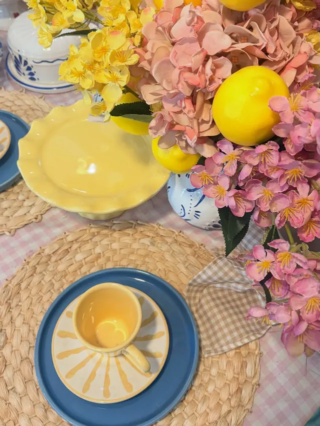
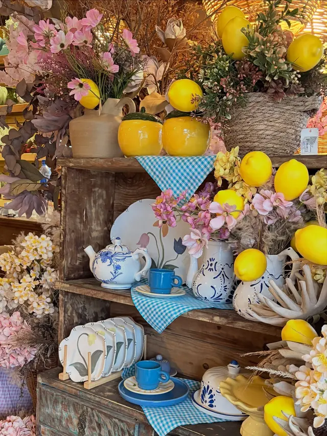
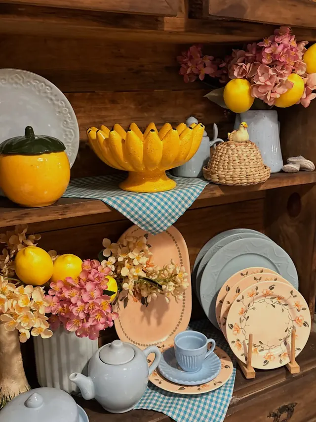
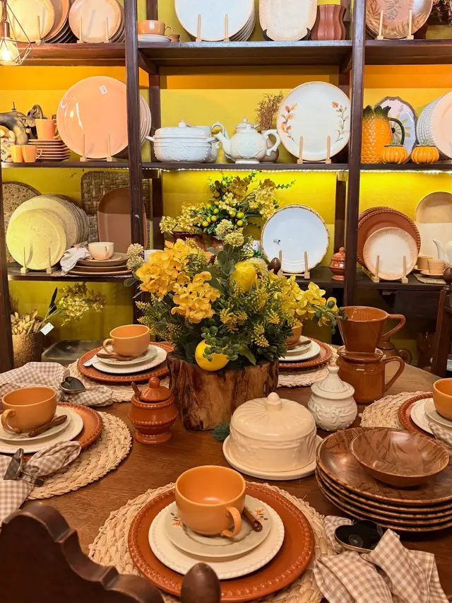
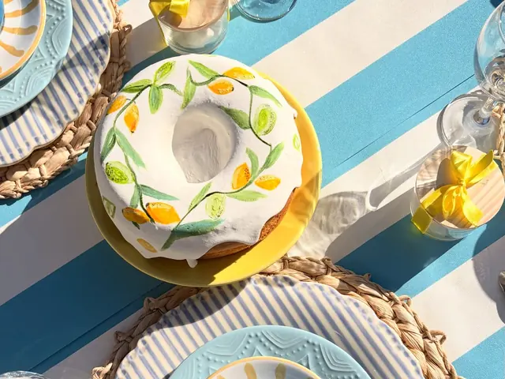
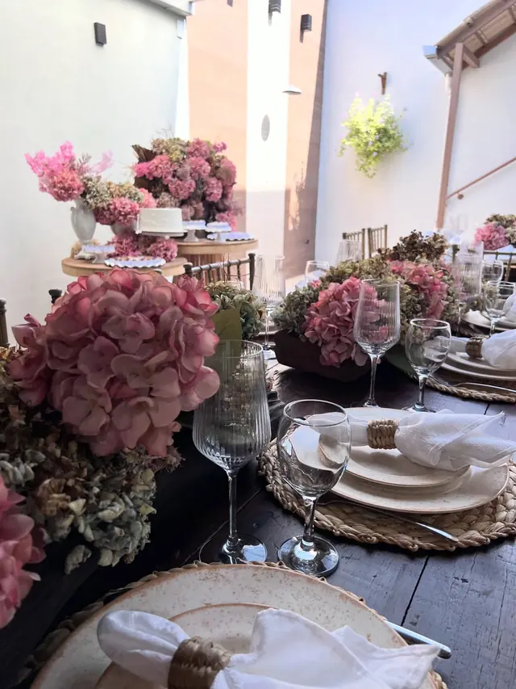
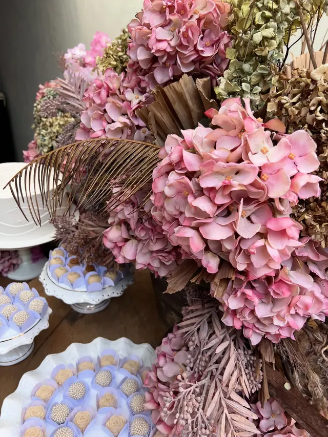
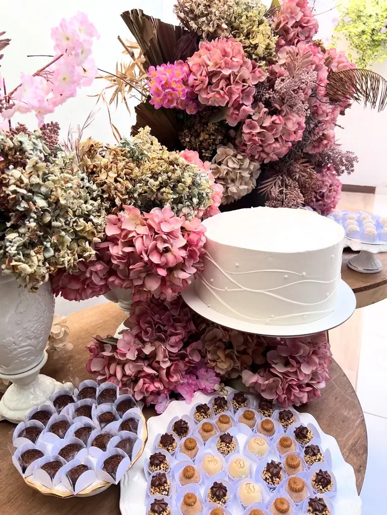

Louças e coleções
O site não vende online. Preço e disponibilidade das peças a loja informa pelo WhatsApp, ou você vem ver de perto.
[pendente: catálogo com nome, medidas e preço de cada peça]







Coleções
Para montar a mesa inteira
Coleção
Amarelo, azul e flores
Amarelo, azul, flores e afeto em cada detalhe. Uma coleção que transforma qualquer cantinho em cenário de memórias.
Quero esta coleçãoColeção
Louças para receber
Essa coleção chegou para transformar a mesa em experiência, trazendo charme, acolhimento e um clima leve.
Quero esta coleçãoColeção
Tons terrosos
Tons terrosos, flores e detalhes que aquecem o coração. É a mesa que fica montada na loja, para você ver as peças juntas.
Quero esta coleçãoServiços da loja
Alugar peças ou montar o acervo
[pendente: confirmar se locação e curadoria são abertas a qualquer cliente ou só a membros do Clube]
Locação
Locação de peças
Parte do acervo da loja pode ser alugada para a sua mesa, em casa ou num evento. Pergunte pelas peças que você viu aqui ou no Instagram.
[pendente: catálogo de locação, condições, retirada e devolução]
Perguntar sobre locaçãoCuradoria
Curadoria para casas, pousadas e restaurantes
Ajudamos a escolher louças e a compor a mesa de casas, pousadas, restaurantes e projetos que dão atenção ao detalhe. A conversa começa pelo espaço e pelo jeito de receber de quem está lá.
[pendente: escopo, etapas e valores]
Perguntar sobre curadoriaComo funciona
Três passos, sem cadastro
- 1
Escolha
Uma peça ou uma coleção, aqui no site ou no Instagram. Experiências são para membros do Clube.
- 2
Mande a mensagem
O botão abre o WhatsApp com o texto pronto. É só enviar.
- 3
Combine
Preço, disponibilidade, data e retirada a loja confirma na conversa.
Outros caminhos
Só para membros do Clube
Experiências
Piquenique na Serra dos Cocais e evento intimista, exclusivos para membros do Clube D'Chica.
Fazer parte
Clube D'Chica
Para quem é apaixonada por mesa posta. Membros têm acesso às experiências.